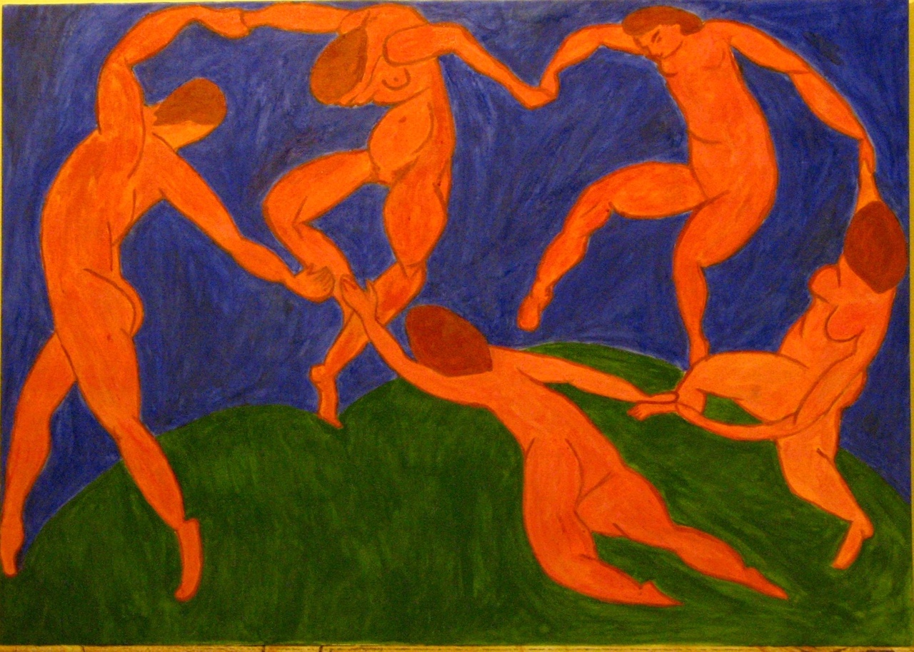

Modernizm Nedir?
Modernizm, 19. yüzyılın sonlarından itibaren gelişen ve 20. yüzyılın başlarında zirveye ulaşan bir sanat akımıdır. Modernizm, geleneksel sanat anlayışlarından kopmayı ve yeni tekniklerle, bireysel duyguları ve toplumsal değişimleri yansıtmayı amaçlamıştır. Bu akımda sanatçılar, estetik değerlerin ötesinde toplumsal ve kültürel eleştiriler yapmış, soyutlama, deforme etme ve figüratif resimden uzaklaşma gibi yenilikçi teknikleri kullanmışlardır. Modernizm, sadece sanat değil, aynı zamanda edebiyat, mimari, müzik gibi birçok alanda etkili olmuştur. Pablo Picasso, Henri Matisse, James Joyce gibi sanatçılar, modernizmin en önemli temsilcilerindendir.
